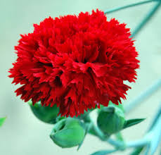
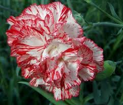
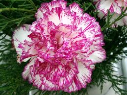
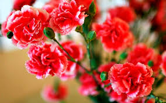
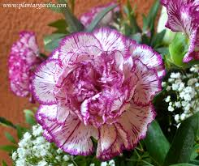
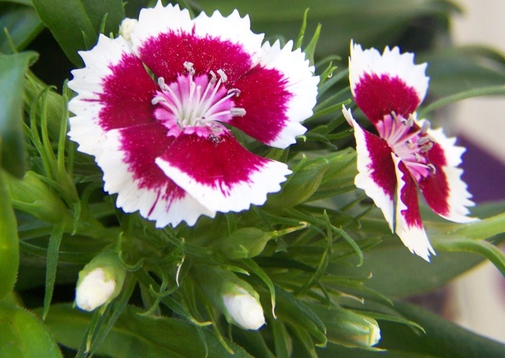

El clavel o clavelina (Dianthus caryophyllus) es una planta herbácea perteneciente a la familia de las Caryophyllaceae, difundida en las regiones mediterráneas. Es espontánea en la flora de la península ibérica. En su forma típica es una planta cespitosa, con numerosos vástagos de hasta 1 m de altura. Sus hojas son lineales, angostas, opuestas y envainadoras, más anchas las basales que las caulinares. Cada tallo forma una flor terminal. Sus flores son vistosas, pedunculadas en panícula o cima laxa, a veces solitarias, de bordes más o menos dentados.
Los claveles son reconocido fácilmente porque son flores cespitosas, es decir, que poseen un tallo subterráneo corto que crece dando matas densas de hasta un metro de altura y de entre 6 y 8.5 centímetros de diámetro.
Los claveles poseen hojas lineales, angostas, opuestas y envainadoras, y cada tallo forma una flor terminal de no menos de cinco pétalos festoneados (con ondas) o con dientecillos. En algunas partes del mundo se han registrado flores de esta familia de hasta 40 pétalos, así que todo depende de la especie.
Como los claveles son flores bisexuales, florecen en un grupo ramificado o bifurcado. La flor tiene fuerte fragancia y sus colores más comunes son el rojo, rosado, blanco, amarillo y mixto. Los diferentes tamaños de la flor permiten clasificarla para su venta, siendo los claveles de 60 centímetros los favoritos en el comercio. También se encuentran variantes de 50 centímetros, de 40 centímetros y de 30 centímetros a menos. Estos últimos son usados especialmente en ramilletes.